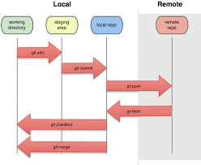

Git es un sistema de control de versiones distribuido que permite a los desarrolladores rastrear y gestionar cambios en el código fuente de un proyecto, facilitando la colaboración en equipo. Su arquitectura distribuida permite que cada miembro del equipo tenga una copia completa del historial del proyecto, lo que agiliza las operaciones y permite trabajar sin conexión.
SEO (Search Engine Optimization) es el proceso de optimizar un sitio web para mejorar su visibilidad en los resultados orgánicos de los motores de búsqueda como Google. El objetivo del SEO es aumentar la cantidad y calidad del tráfico hacia un sitio web mediante la mejora de su posicionamiento en las páginas de resultados de búsqueda (SERP). Esto se logra a través de diversas técnicas y estrategias, que incluyen la optimización del contenido, la mejora de la estructura del sitio, la obtención de enlaces de calidad y la implementación de prácticas recomendadas para la experiencia del usuario. Un buen SEO puede ayudar a atraer más visitantes, aumentar la autoridad del sitio y mejorar la conversión de usuarios en clientes o seguidores.
Git se ha convertido en el estándar mundial para el control de versiones. Entonces, ¿qué es exactamente? Git es un sistema de control de versiones distribuido, lo que significa que un clon local del proyecto es un repositorio de control de versiones completo. Estos repositorios locales totalmente funcionales facilitan el trabajo sin conexión o de forma remota. Los desarrolladores confirman su trabajo localmente y, a continuación, sincronizan su copia del repositorio con la copia en el servidor. Este paradigma difiere del control de versiones centralizado en el que los clientes deben sincronizar el código con un servidor antes de crear nuevas versiones de código. La flexibilidad y popularidad de Git lo convierten en una opción genial para cualquier equipo. Muchos desarrolladores y graduados universitarios ya saben cómo usar Git. La comunidad de usuarios de Git ha creado recursos para entrenar a los desarrolladores y la popularidad de Git facilita la ayuda cuando sea necesario. Casi todos los entornos de desarrollo tienen compatibilidad con Git y las herramientas de línea de comandos de Git implementadas en todos los sistemas operativos principales.Open Graph es un protocolo desarrollado por Facebook que permite a los desarrolladores web integrar sus páginas con las redes sociales, facilitando la compartición de contenido de manera más atractiva y estructurada. Al utilizar etiquetas Open Graph en el código HTML de una página web, los creadores pueden definir cómo se mostrará el contenido cuando se comparta en plataformas sociales como Facebook, Twitter, LinkedIn, entre otras. Estas etiquetas permiten especificar elementos como el título, la descripción, la imagen y el tipo de contenido, lo que mejora la apariencia y la relevancia de las publicaciones compartidas, aumentando así la probabilidad de interacción por parte de los usuarios.